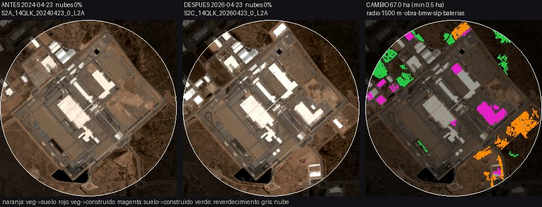

<title>DGED Systems</title>
<meta name="claude:viewport-fit-sides" content="cover">
<link rel="preconnect" href="https://fonts.googleapis.com">
<link rel="stylesheet" href="https://fonts.googleapis.com/css2?family=IBM+Plex+Sans:wght@400;500;600;700&family=Space+Grotesk:wght@500;700&display=swap">
<style>

/* Layout: secciones apiladas, una por lámina del PDF; noche y papel alternan */
:root{color-scheme:dark;
  --display:"Space Grotesk","Inter",system-ui,sans-serif; --body:"IBM Plex Sans",system-ui,sans-serif;
  --ink:#14171c; --ink2:#1d2229; --line:#2d333c; --paper:#f4f1ea; --muted:#9aa3ad;
  --text:#e9e6df; --amber:#e9a84c; --green:#8fbf8f; --red:#d9715f; --blue:#7fa8c9;
}
*{box-sizing:border-box;margin:0;padding:0}
html,body{background:var(--ink)}
body{font-family:var(--body)!important}
body{color:var(--text);-webkit-print-color-adjust:exact;print-color-adjust:exact}
.s{position:relative;background:var(--ink);padding-block:3.5rem 2.2rem;padding-left:max(16px,env(safe-area-inset-left,0px),calc((100% - 1120px)/2));padding-right:max(16px,env(safe-area-inset-right,0px),calc((100% - 1120px)/2))}
.s>*{min-width:0}
.s.light{background:var(--paper);color:var(--ink)}
.s.light .muted{color:#5d646d}
.s.light .card{background:#fff;border-color:#ddd8cc}
.s.light .k{color:#a86c1a}
.s:nth-of-type(8) td{padding:.05in .1in}
.k{font-size:11pt;letter-spacing:.18em;text-transform:uppercase;color:var(--amber);font-weight:600;margin-bottom:.16in}
h1{font-family:var(--display);font-size:40pt;line-height:1.05;font-weight:700;letter-spacing:-.01em}
h2{font-family:var(--display);font-size:29pt;line-height:1.12;font-weight:700;letter-spacing:-.01em;margin-bottom:.28in;max-width:11in}
h3{font-size:14.5pt;font-weight:700;margin-bottom:.07in}
p,li{font-size:12.5pt;line-height:1.45}
.muted{color:var(--muted)}
.foot{margin-top:2rem;display:flex;flex-wrap:wrap;gap:.5rem 1rem;justify-content:space-between;font-size:8.5pt;color:var(--muted);letter-spacing:.04em}
.s.light .foot{color:#8a8f96}
.grid{display:grid;gap:.22in}
.g2{grid-template-columns:1fr 1fr}.g3{grid-template-columns:repeat(3,1fr)}.g4{grid-template-columns:repeat(4,1fr)}
.card{background:var(--ink2);border:1px solid var(--line);border-radius:10px;padding:.22in .24in}
.big{font-family:var(--display);font-size:30pt;font-weight:700;color:var(--amber);line-height:1}
.s.light .big{color:#b0701c}
.tag{display:inline-block;font-size:8.5pt;font-weight:700;letter-spacing:.08em;text-transform:uppercase;padding:.03in .09in;border-radius:4px;margin-bottom:.1in}
.t-ok{background:#2b4a30;color:#b9e2b9}.t-wk{background:#4d3a1c;color:#f2cf94}.t-me{background:#2b3a4d;color:#b8d2ea}
.s.light .t-ok{background:#d9ecd6;color:#245a2a}.s.light .t-wk{background:#f6e3c2;color:#7a4c0e}.s.light .t-me{background:#dce7f2;color:#24496d}
table{width:100%;border-collapse:collapse;font-size:11.5pt}
th{text-align:left;font-weight:600;color:var(--muted);font-size:9.5pt;letter-spacing:.06em;text-transform:uppercase;padding:.07in .1in;border-bottom:1px solid var(--line)}
td{padding:.075in .1in;border-bottom:1px solid var(--line)}
.s.light th{color:#6b7179;border-color:#d6d0c3}.s.light td{border-color:#e2ddd2}
.num{text-align:right;font-variant-numeric:tabular-nums}
ul{padding-left:.2in}li{margin-bottom:.05in}
.bar{height:.12in;border-radius:3px;background:var(--amber)}
.price{font-family:var(--display);font-size:21pt;font-weight:700;color:var(--amber);margin:.06in 0 .04in}
.s.light .price{color:#b0701c}
.small{font-size:10pt;line-height:1.4}
.quote{font-size:20pt;line-height:1.35;font-weight:500;max-width:10.5in}
.rule{height:3px;width:1.1in;background:var(--amber);margin:.25in 0}
.logo{display:flex;align-items:center;gap:.14in}
.hex{width:.5in;height:.5in}

h1{font-size:clamp(28pt,5.5vw,46pt)!important;text-wrap:balance}
h2{font-size:clamp(20pt,3.6vw,29pt);text-wrap:balance}
.tw{overflow-x:auto;min-width:0}
.tw table{min-width:560px}
.grid>*{min-width:0}
a:focus-visible{outline:2px solid var(--amber)}
@media (max-width:820px){
 .grid,.g2,.g3,.g4{grid-template-columns:1fr!important;gap:1rem!important}
 .big{font-size:24pt}
}
</style>


<!-- 1 PORTADA -->
<section class="s" style="display:flex;flex-direction:column;gap:3rem;padding-block:4rem 2.5rem">
  <div class="logo">
    <svg class="hex" viewBox="0 0 48 48" fill="none" stroke="#e9a84c" stroke-width="2.4"><path d="M24 3 42 13.5v21L24 45 6 34.5v-21z"/><path d="M24 13 33 18.2v10.6L24 34l-9-5.2V18.2z"/><path d="M24 3v10M42 34.5l-9-5.7M6 34.5l9-5.7"/></svg>
    <div style="font-size:12pt;letter-spacing:.22em;font-weight:600;color:var(--amber)">DGED SYSTEMS</div>
  </div>
  <div>
    <h1 style="font-size:50pt;max-width:10.5in">Decisiones con fuente.<br>Inteligencia artificial e investigación aplicada desde México.</h1>
    <div class="rule"></div>
    <p class="muted" style="font-size:15pt;max-width:9in">Presentación del negocio, primeros productos y servicios: lo que ya podemos entregar y lo que viene en las próximas semanas.</p>
  </div>
  <div class="muted" style="font-size:10.5pt;display:flex;flex-wrap:wrap;gap:.5rem 1rem;justify-content:space-between"><span>Octubre 2026</span><span>Atlas · Revisión de adquisiciones · Evaluación técnica · Agentes</span></div>
</section>

<!-- 2 QUIENES SOMOS -->
<section class="s light">
  <div class="k">Quiénes somos</div>
  <h2>Una empresa de IA que hace lo contrario de mucho discurso y poca ingeniería.</h2>
  <div class="grid g2" style="gap:.5in">
    <div>
      <p style="font-size:14pt;margin-bottom:.2in">DGED Systems es una empresa mexicana de inteligencia artificial e investigación aplicada. Trabajamos con <b>requisitos claros, presupuesto defendible e hitos verificables</b>.</p>
      <p style="font-size:14pt">Nuestro primer producto, <b>Atlas</b>, criba sitios industriales en el norte y el Bajío contra sus restricciones físicas, con fuentes públicas oficiales de México (INEGI, SMN/CONAGUA) citadas dato por dato.</p>
    </div>
    <div class="grid" style="gap:.16in">
      <div class="card"><h3>1 · Ningún número sin una fuente que haya respondido</h3><p class="small muted">Un factor sin respuesta de su fuente no entra al cálculo: se muestra como ausente, nunca se rellena.</p></div>
      <div class="card"><h3>2 · Un hallazgo sin prueba es solo una nota</h3><p class="small muted">Cada regla del producto tiene un test automático que impide que se rompa. Hoy son 31 invariantes.</p></div>
      <div class="card"><h3>3 · "No medido" se dice</h3><p class="small muted">Lo que no hemos comprobado se escribe así en el entregable. Cada memo trae su sección "Qué no dice este estudio".</p></div>
    </div>
  </div>
  <div class="foot"><span>DGED Systems</span></div>
</section>

<!-- 3 MERCADO -->
<section class="s">
  <div class="k">El momento</div>
  <h2>El dinero del nearshoring existe. El comprador de 2026 no compra entusiasmo: compra no equivocarse.</h2>
  <div class="grid g4" style="margin-bottom:.32in">
    <div class="card"><div class="big" style="font-size:24pt">USD 40.9 mil M</div><p class="small muted" style="margin-top:.1in">IED 2025, récord (+10.8%). Solo 18% es inversión nueva.<br>Secretaría de Economía</p></div>
    <div class="card"><div class="big">690,857 m²</div><p class="small muted" style="margin-top:.1in">Absorción neta en Monterrey, 2T 2026 (+166.7% a/a). 55 naves en construcción.<br>Colliers</p></div>
    <div class="card"><div class="big">5.5%</div><p class="small muted" style="margin-top:.1in">Vacancia industrial nacional, 3T 2026. Empresas ajustan o posponen por la revisión del T-MEC.<br>Solili</p></div>
    <div class="card"><div class="big">77</div><p class="small muted" style="margin-top:.1in">Proyectos de transmisión de CFE por licitar (abr 2026). El cuello es la red, no la generación.<br>CFE · Clúster Energético NL</p></div>
  </div>
  <div class="grid g2" style="gap:.4in">
    <div><h3 style="color:var(--amber)">Lo que ya está vendido (y barato)</h3><p class="muted">Inventario, vacancia y renta: Solili desde MXN 1,449/mes; Colliers y CBRE publican reportes gratuitos. No competimos ahí.</p></div>
    <div><h3 style="color:var(--amber)">El hueco que nadie publica como producto</h3><p class="muted">El predio contra sus restricciones físicas —sequía, inundación, uso de suelo, sismo, ruta, contexto eléctrico regional— con la fuente y el corte de cada dato, en un memo que firma una persona.</p></div>
  </div>
  <div class="foot"><span>Fuentes públicas consultadas el 2026-10-12 · detalle en docs/08-mercado.md</span></div>
</section>

<!-- 4 ATLAS -->
<section class="s light">
  <div class="k">Producto 1 · Atlas</div>
  <h2>Atlas: un mapa, una ontología chica y un número que solo existe si las fuentes oficiales respondieron.</h2>
  <div class="grid" style="grid-template-columns:1.05fr 1fr;gap:.45in">
    <div>
      <div class="tw"><table>
        <tr><th>Factor</th><th>Fuente</th><th class="num">Peso*</th></tr>
        <tr><td><b>Sequía municipal</b></td><td>Monitor de Sequía SMN/CONAGUA</td><td class="num">0.328</td></tr>
        <tr><td><b>Inundación</b></td><td>WMS de INEGI</td><td class="num">0.246</td></tr>
        <tr><td><b>Uso de suelo</b> (serie VII)</td><td>WMS de INEGI</td><td class="num">0.246</td></tr>
        <tr><td>Vía férrea mapeada</td><td>OpenStreetMap</td><td class="num">0.100</td></tr>
        <tr><td>Sismicidad M4+ (100 km, 50 años)</td><td>USGS</td><td class="num">0.080</td></tr>
        <tr><td class="muted">Clima, subestación cercana, establecimientos</td><td class="muted">NASA POWER · OSM · DENUE</td><td class="num muted">se muestran</td></tr>
        <tr><td class="muted">Ruta a frontera o puerto, conteo DENUE</td><td class="muted">SAKBÉ · DENUE (con clave)</td><td class="num muted">si responden</td></tr>
      </table></div>
      <p class="small muted" style="margin-top:.12in">*Modelo atlas-live-0.2.0, sin claves y con las dos capas opcionales respondiendo. Los pesos suman 1 en las 16 combinaciones posibles (probado).</p>
    </div>
    <div class="grid" style="gap:.16in;align-content:start">
      <div class="card"><h3>Publicable o no</h3><p class="small">El número se publica solo si sequía, inundación y uso de suelo respondieron. Si una fuente cae, el sitio se marca como no publicable en lugar de inventar.</p></div>
      <div class="card"><h3>Cada dato con su corte</h3><p class="small">La ficha muestra municipio (polígono del Catálogo Único de INEGI), fecha del corte y la URL consultada.</p></div>
      <div class="card"><h3>Oráculo con candados</h3><p class="small">Asistente de IA que responde solo con herramientas de Atlas: toda cifra debe venir de un resultado consultado o se retira de la respuesta.</p></div>
    </div>
  </div>
  <div class="foot"><span>FastAPI · MapLibre · Postgres/PostGIS · Docker</span></div>
</section>

<!-- 5 ATLAS EN VIVO -->
<section class="s">
  <div class="k">Atlas en vivo · 13 de octubre de 2026</div>
  <h2>10 de 10 sitios calificados contra fuentes oficiales, en unos 2 segundos por sitio.</h2>
  <div class="grid" style="grid-template-columns:1.25fr 1fr;gap:.5in">
    <div class="tw"><table>
      <tr><th>Sitio candidato</th><th>Corredor</th><th class="num">Viabilidad</th><th style="width:2.1in"></th></tr>
      <tr><td>San Luis Potosí, zona industrial</td><td class="muted">Bajío</td><td class="num"><b>83.4</b></td><td><div class="bar" style="width:83.4%"></div></td></tr>
      <tr><td>Ramos Arizpe</td><td class="muted">Norte</td><td class="num"><b>82.9</b></td><td><div class="bar" style="width:82.9%"></div></td></tr>
      <tr><td>Celaya, corredor industrial</td><td class="muted">Bajío</td><td class="num"><b>81.3</b></td><td><div class="bar" style="width:81.3%"></div></td></tr>
      <tr><td>Apodaca, corredor industrial</td><td class="muted">Norte</td><td class="num"><b>78.3</b></td><td><div class="bar" style="width:78.3%"></div></td></tr>
      <tr><td>León, sur</td><td class="muted">Bajío</td><td class="num"><b>77.8</b></td><td><div class="bar" style="width:77.8%"></div></td></tr>
      <tr><td>García, poniente</td><td class="muted">Norte</td><td class="num"><b>76.9</b></td><td><div class="bar" style="width:76.9%"></div></td></tr>
      <tr><td>El Marqués, Querétaro</td><td class="muted">Bajío</td><td class="num"><b>76.0</b></td><td><div class="bar" style="width:76.0%"></div></td></tr>
      <tr><td>Puerto Interior, Silao</td><td class="muted">Bajío</td><td class="num"><b>72.8</b></td><td><div class="bar" style="width:72.8%"></div></td></tr>
      <tr><td>Pesquería, corredor KIA</td><td class="muted">Norte</td><td class="num"><b>72.3</b></td><td><div class="bar" style="width:72.3%"></div></td></tr>
      <tr><td>Salinas Victoria, norte</td><td class="muted">Norte</td><td class="num"><b>71.2</b></td><td><div class="bar" style="width:71.2%"></div></td></tr>
    </table></div>
    <div class="grid" style="gap:.18in;align-content:start">
      <div class="card"><div class="big">10 / 10</div><p class="small muted" style="margin-top:.08in">sitios publicables, 0 errores en la corrida de verificación</p></div>
      <div class="card"><div class="big">~2 s</div><p class="small muted" style="margin-top:.08in">por sitio, consultando INEGI y CONAGUA en el momento</p></div>
      <p class="small muted">Puntos candidatos de demostración, no polígonos oficiales de parque ni recomendación de inversión. Un 78 no significa agua disponible ni un predio a salvo: significa que, con las fuentes citadas, el sitio pasa el cribado.</p>
    </div>
  </div>
  <div class="foot"><span>Modelo atlas-live-0.2.0 · sequía del corte 2026-09-30</span></div>
</section>

<!-- 6 PORTAFOLIO -->
<section class="s light">
  <div class="k">Portafolio</div>
  <h2>Lo que ofrecemos hoy y lo que llega en las próximas semanas.</h2>
  <div class="tw"><table>
    <tr><th>Servicio</th><th>Para quién</th><th>Precio</th><th>Estado</th></tr>
    <tr><td><b>Atlas Comparativo</b> · 2–3 predios</td><td>Manufactura o logística eligiendo entre predios ya ofertados</td><td>USD 15,000</td><td><span class="tag t-ok" style="margin:0">Listo</span></td></tr>
    <tr><td><b>Atlas Screening</b> · hasta 12 sitios</td><td>Desarrolladores, corporativos, fondos</td><td>USD 55,000 – 70,000</td><td><span class="tag t-ok" style="margin:0">Listo</span></td></tr>
    <tr><td><b>Atlas Operate</b> · anual</td><td>Clientes con Screening entregado</td><td>USD 96,000 / año</td><td><span class="tag t-ok" style="margin:0">Tras piloto</span></td></tr>
    <tr><td><b>Revisión técnica de adquisiciones</b></td><td>FIBRAs, fondos y desarrolladores que compran naves</td><td>USD 3,500 / nave</td><td><span class="tag t-wk" style="margin:0">En semanas</span></td></tr>
    <tr><td><b>Evaluación técnica independiente</b></td><td>Inversionistas, corporativos, dependencias</td><td>USD 8,000 – 15,000</td><td><span class="tag t-ok" style="margin:0">Listo</span></td></tr>
    <tr><td><b>Agente de atención y cotización</b> (WhatsApp)</td><td>PyMEs con cotización compleja</td><td>MXN 90k–180k + mensualidad</td><td><span class="tag t-wk" style="margin:0">En semanas</span></td></tr>
    <tr><td><b>Auditoría de modelos</b></td><td>Fintech, riesgo de crédito, ciencia de datos</td><td>USD 12,000 – 20,000</td><td><span class="tag t-wk" style="margin:0">En semanas</span></td></tr>
    <tr><td><b>Ojo satelital · Cribado de cartera (NIIF S2)</b></td><td>FIBRAs emisoras, banca, desarrolladores</td><td>desde USD 20,000</td><td><span class="tag t-me" style="margin:0">Tras medir</span></td></tr>
  </table></div>
  <p class="small muted" style="margin-top:.16in"><b>Listo</b>: se puede vender y entregar hoy. <b>En semanas</b>: el núcleo existe y falta empaquetarlo o medirlo en real. <b>Tras medir</b>: prototipo; no se vende hasta medir sus fuentes y su precisión.</p>
  <div class="foot"><span>Precios en USD para nearshoring, fondos y FIBRAs; MXN para PyMEs y gobierno</span></div>
</section>

<!-- 7 ATLAS OFERTAS -->
<section class="s">
  <div class="k">Atlas · cómo se compra</div>
  <h2 style="margin-bottom:.2in">Una puerta de entrada corta, un piloto con memo firmado y una anualidad que solo avisa cuando algo cambia.</h2>
  <div class="grid g3">
    <div class="card"><span class="tag t-ok">Puerta de entrada</span><h3>Atlas Comparativo</h3><div class="price">USD 15,000</div>
      <ul class="small"><li>Hasta 3 predios lado a lado, con fecha de decisión</li><li>Cada factor con fuente y corte; escenario de año seco</li><li>Memo de 6–8 páginas firmado por un analista</li><li>5 días hábiles por comparativo</li><li><b>Acreditable al 100%</b> contra un Screening firmado en 90 días</li></ul></div>
    <div class="card" style="border-color:var(--amber)"><span class="tag t-ok">El piloto</span><h3>Atlas Screening</h3><div class="price">USD 55,000</div>
      <ul class="small"><li>Hasta 12 sitios en el corredor de Monterrey</li><li>Score base, 3 escenarios, memo de 8–12 páginas</li><li>Taller de 90 min y 5 lectores por 90 días</li><li>6 semanas · 50% al firmar, 50% contra entrega</li><li>USD 70,000 si construimos el universo de candidatos</li></ul></div>
    <div class="card"><span class="tag t-ok">Después del piloto</span><h3>Atlas Operate</h3><div class="price">USD 96,000 / año</div>
      <ul class="small"><li>Refresco trimestral de fuentes y re-score</li><li>8 asientos, dos talleres al año</li><li>Alerta cuando un factor de un sitio publicado se mueve más de 8 puntos. Sin cambio, sin correo</li><li>Corredor extra USD 48,000/año · 10 sitios extra USD 8,000</li></ul></div>
  </div>
  <p class="small muted" style="margin-top:.22in">Atlas Portfolio (hasta 40 sitios, 2 corredores, comité trimestral; USD 210,000/año) se ofrece después de entregar dos Screenings. Atlas es apoyo a la decisión: no sustituye estudio de interconexión, concesión de agua, MIA ni dictamen de seguridad.</p>
  <div class="foot"><span>DGED Systems</span></div>
</section>

<!-- 8 ADQUISICIONES -->
<section class="s light">
  <div class="k">Producto 2 · Revisión técnica de adquisiciones</div>
  <h2 style="margin-bottom:.2in">Banderas rojas de su próxima adquisición antes de firmar exclusividad. Cada dato con su página.</h2>
  <div class="grid" style="grid-template-columns:1fr 1.15fr;gap:.45in">
    <div>
      <p style="margin-bottom:.14in">Leemos el cuarto de datos (contratos de renta, escrituras, permisos, oficios) y entregamos:</p>
      <ul><li><b>Rent roll automático</b>: inquilino, m², renta, vencimientos, garantías</li><li><b>Cruces</b>: m² de escritura vs. contrato; permisos y contratos que vencen en el horizonte</li><li><b>Riesgo físico por nave</b> con Atlas</li><li><b>Memo priorizado</b> con cita literal y lo que no se revisó</li></ul>
      <div class="price" style="margin-top:.2in">USD 3,500 por nave</div>
      <p class="small muted">Mínimo 3 naves · tope de USD 45,000 por cada 60 naves · 50% al recibir el cuarto de datos, 50% contra entrega. Referencia: una inspección física cuesta USD 8,000–15,000 por edificio.</p>
    </div>
    <div class="card">
      <div class="small muted" style="margin-bottom:.1in;letter-spacing:.05em">EXTRACTO DEL MEMO DE MUESTRA · CUARTO DE DATOS FICTICIO</div>
      <div class="tw"><table class="small">
        <tr><th>Bandera</th><th>Cita</th></tr>
        <tr><td><b style="color:#b3422f">Superficie no cuadra</b><br><span class="muted">Nave 2: se rentan 9,200 m², la escritura ampara 8,500 m²</span></td><td class="muted">escritura_parque.pdf, p. 1 · contrato_nave_2.pdf, p. 1</td></tr>
        <tr><td><b style="color:#b3422f">Permiso vencido</b><br><span class="muted">Licencia de uso de suelo vigente solo hasta 2025-06-30</span></td><td class="muted">permisos.pdf, p. 1</td></tr>
        <tr><td><b style="color:#b3422f">Inquilino sin contrato</b><br><span class="muted">Aparece en la relación de rentas, sin contrato en el cuarto</span></td><td class="muted">relacion_rentas.pdf, p. 1</td></tr>
        <tr><td><b style="color:#b3422f">Contrato vence pronto</b><br><span class="muted">Vence el 2027-03-31, dentro de 12 meses</span></td><td class="muted">contrato_nave_1.pdf, p. 1</td></tr>
        <tr><td><b style="color:#a86c1a">Contrato sin garantía</b><br><span class="muted">No se localizó depósito, fianza ni carta de crédito</span></td><td class="muted">contrato_nave_2.pdf</td></tr>
      </table></div>
      <p class="small muted" style="margin-top:.1in">En la muestra, el lector encuentra exactamente los 5 errores plantados. Lo que no se puede citar literal, no se reporta.</p>
    </div>
  </div>
  <div class="foot"><span>No incluye opinión legal, inspección física, ambiental firmado, valuación ni capacidad eléctrica certificada</span></div>
</section>

<!-- 9 EVALUACION TECNICA + AUDITORIA -->
<section class="s">
  <div class="k">Producto 3 · Consultoría técnica</div>
  <h2>Auditamos un proyecto o un modelo antes de que alguien firme el cheque.</h2>
  <div class="grid g2" style="gap:.35in">
    <div class="card"><span class="tag t-ok">Listo para vender</span><h3>Evaluación técnica independiente</h3><div class="price">USD 8,000 – 15,000</div>
      <p class="small" style="margin-bottom:.1in">Para inversionistas y fondos (IA, datos, espacio), corporativos que compran a un proveedor de IA y dependencias que evalúan propuestas tecnológicas.</p>
      <ul class="small"><li>Dictamen de 10–15 páginas en 7–10 días hábiles</li><li>Requisitos, supuestos y costo contra comparables públicos</li><li>Hitos verificables con definición de "terminado"</li><li>Lo que el proveedor no ha medido y las preguntas para la siguiente reunión</li><li>Recomendación: seguir / seguir con condiciones / no seguir</li></ul></div>
    <div class="card"><span class="tag t-wk">En semanas</span><h3>Auditoría de modelos predictivos</h3><div class="price">USD 12,000 – 20,000</div>
      <p class="small" style="margin-bottom:.1in">Para fintech, riesgo de crédito y equipos de datos con un modelo que "funciona en el backtest" y va a producción o a comité.</p>
      <ul class="small"><li>Holdout fuera de tiempo sellado y validación purgada</li><li>Pruebas placebo, DSR y probabilidad de sobreajuste (PBO)</li><li>Fugas de información encontradas</li><li>Veredicto con el tamaño de muestra de cada afirmación</li><li>2–3 semanas, en la infraestructura del cliente y con NDA</li></ul></div>
  </div>
  <p class="small muted" style="margin-top:.2in">Cláusula de independencia: DGED no vende al evaluado durante 12 meses. El dictamen es opinión técnica, no garantía.</p>
  <div class="foot"><span>Método probado en sistemas propios en producción</span></div>
</section>

<!-- 10 AGENTE WHATSAPP -->
<section class="s light">
  <div class="k">Producto 4 · Agentes y automatización</div>
  <h2>Un agente de WhatsApp que atiende y cotiza, sin inventar una sola cifra.</h2>
  <div class="grid" style="grid-template-columns:1.1fr 1fr;gap:.45in">
    <div>
      <p style="margin-bottom:.16in">Para PyMEs con <b>cotización compleja</b> y volumen por WhatsApp: gestorías, refaccionarias, talleres, distribuidores de autos y maquinaria, servicios técnicos.</p>
      <ul><li>Contesta con frases del propio negocio, citadas, no redactadas</li><li>La cifra la calcula el cotizador con las reglas del cliente y <b>la aprueba una persona</b> antes de salir</li><li>Escala lo que no sabe en lugar de contestar mal</li><li>Tablero de tiempo hasta la respuesta y hasta la cotización</li><li>30 días en modo sombra antes de contestar solo</li><li>Sobre la API oficial de WhatsApp: el cliente no arriesga su número</li></ul>
    </div>
    <div class="grid" style="gap:.18in;align-content:start">
      <div class="card"><h3>Implementación</h3><div class="price">MXN 90,000 – 180,000</div><p class="small muted">Primer cliente en 4–5 semanas; los siguientes en 2–3.</p></div>
      <div class="card"><h3>Operación</h3><div class="price">MXN 9,000 – 18,000 / mes</div><p class="small muted">Ajustes, reporte de tiempos y soporte. El costo de plantillas de Meta se traslada a costo.</p></div>
      <p class="small muted">El núcleo ya corre en producción con dinero real en un negocio del sector vehicular. Falta empaquetarlo como plantilla multi-cliente.</p>
    </div>
  </div>
  <div class="foot"><span>No es un chatbot de USD 49: incluye el cotizador del cliente, aprobación humana y medición</span></div>
</section>

<!-- 11 SATELITE -->
<section class="s">
  <div class="k">Lo que viene · Observación de la Tierra</div>
  <h2>Ojo satelital: detectar obra nueva con imágenes Sentinel-2, citando las dos escenas.</h2>
  
  <div class="grid g3">
    <div><h3>BMW San Luis Potosí, abril 2024 → abril 2026</h3><p class="small muted">20.9 ha de suelo a construido dentro del polígono de la planta, con 0% de nubes en ambas fechas. Plausible, aún no verificado en campo.</p></div>
    <div><h3>Reglas que no se rompen</h3><p class="small muted">Con más de 20% de nubes el resultado es "no concluye", nunca "cero cambio". El reverdecimiento no cuenta como obra.</p></div>
    <div><h3>Hacia dónde va</h3><p class="small muted">Monitoreo de avance de obra y radar de naves nuevas. Prototipo: se mide su precisión sobre las 55 naves en construcción de Monterrey antes de venderlo.</p></div>
  </div>
  <div class="foot"><span>Sentinel-2 L2A, sin costo de imagen · naranja: vegetación→suelo · magenta: suelo→construido · verde: reverdecimiento</span></div>
</section>

<!-- 12 COMO TRABAJAMOS -->
<section class="s light">
  <div class="k">Por qué confiar</div>
  <h2>Lo que prometemos está escrito como prueba automática, no como intención.</h2>
  <div class="grid g4" style="margin-bottom:.3in">
    <div class="card"><div class="big">31</div><p class="small" style="margin-top:.1in">invariantes del producto, cada una con el test que la hace cumplir</p></div>
    <div class="card"><div class="big">142</div><p class="small" style="margin-top:.1in">pruebas automáticas sin red, en verde</p></div>
    <div class="card"><div class="big">23</div><p class="small" style="margin-top:.1in">fuentes públicas medidas con petición real antes de escribir código</p></div>
    <div class="card"><div class="big">0</div><p class="small" style="margin-top:.1in">megawatts afirmados por predio: no hay fuente pública que lo respalde</p></div>
  </div>
  <div class="grid g3">
    <div><h3>Una persona firma</h3><p class="small muted">El memo tiene un analista con nombre del lado de DGED. No lo firma un modelo.</p></div>
    <div><h3>El score no se afina a gusto</h3><p class="small muted">Las corridas son inmutables. Un cambio de pesos es otra versión con nombre, junto a la base.</p></div>
    <div><h3>Pago que alinea</h3><p class="small muted">50% al firmar y 50% contra entrega. Sin pilotos eternos de buena fe; créditos al 100% hacia el siguiente producto.</p></div>
  </div>
  <div class="foot"><span>Fuentes que no pasaron la medición quedan registradas y descartadas, no en producción</span></div>
</section>

<!-- 13 RUTA -->
<section class="s">
  <div class="k">Ruta</div>
  <h2>Cada fase la paga la anterior.</h2>
  <div class="grid g3" style="margin-bottom:.32in">
    <div class="card" style="border-color:var(--amber)"><span class="tag t-ok">Fase 1 · Ahora</span><h3>IA e investigación aplicada</h3><p class="small muted">Atlas, revisión de adquisiciones, evaluación técnica, agentes y analítica con validación. Lo que se cobra desde el día uno.</p></div>
    <div class="card"><span class="tag t-wk">Fase 2</span><h3>Productos propios y datos espaciales</h3><p class="small muted">Observación de la Tierra aplicada a agua, agricultura, infraestructura y riesgo. Atlas es la puerta: la misma ontología recibe capas satelitales.</p></div>
    <div class="card"><span class="tag t-me">Fase 3</span><h3>Hardware espacial</h3><p class="small muted">Cargas útiles y CubeSats con socios. No entra al presupuesto hasta que la fase 1 tenga clientes que paguen.</p></div>
  </div>
  <h3 style="color:var(--amber);margin-bottom:.12in">Próximos 90 días</h3>
  <div class="grid g4">
    <div><p class="small"><b>Demo pública</b> de Atlas desplegada, medida desde una red normal</p></div>
    <div><p class="small"><b>Memo PDF</b> e instantáneas inmutables de cada calificación</p></div>
    <div><p class="small"><b>Primeros memos</b> con desarrolladores, FIBRAs y corporativos de manufactura</p></div>
    <div><p class="small"><b>Nuevas capas</b>: DENUE, rutas SAKBÉ, CENAPRED, sismo CFE y acuíferos, cada una medida antes de entrar</p></div>
  </div>
  <div class="foot"><span>DGED Systems</span></div>
</section>

<!-- 14 CIERRE -->
<section class="s" style="padding-block:4.5rem 2.5rem">
  <div class="k">Siguiente paso</div>
  <h1 style="font-size:40pt;max-width:11in;margin-bottom:.3in">Tráiganos dos o tres predios con fecha de decisión. En cinco días hábiles tienen el comparativo, con cada dato citado.</h1>
  <div class="rule"></div>
  <p class="quote muted" style="font-size:15pt">Atlas Comparativo · USD 15,000 · acreditable al 100% contra un Atlas Screening.</p>
  <div class="foot"><span>DGED Systems · México</span><span>Apoyo a la decisión. No sustituye estudio de interconexión, concesión de agua, MIA ni dictamen de seguridad.</span></div>
</section>

